2020: Louise Glück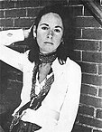
2019: Peter Handke2018: Olga Tokarczuk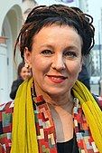
2017: Kazuo Ishiguro2016: Bob Dylan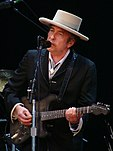
2015: Svetlana Aleksiévich2014: Patrick Modiano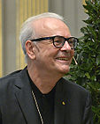
2013: Alice Munro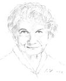
2012: Mo Yan2011: Tomas Tranströmer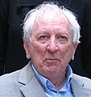
2010: Mario Vargas Llosa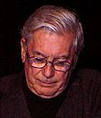
2009: Herta Müller
2020: Francisco Brines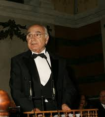
2019: Joan Margarit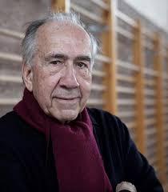
2018: Ida Vitale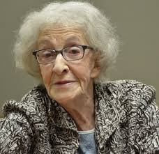
2017: Sergio Ramírez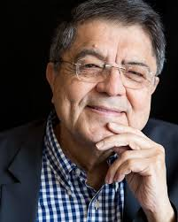
2016: Eduardo Mendoza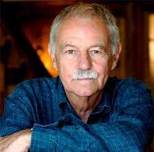
2015: Fernando del Paso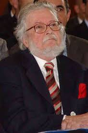
2014: Juan Goytisolo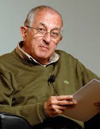
2013: Elena Poniatowska2012: José Manuel Caballero Bonald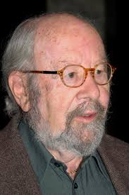
2011: Nicanor Parra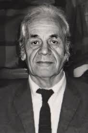
2010: Ana María Matute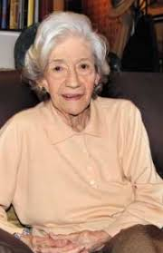
2009: José Emilio Pacheco